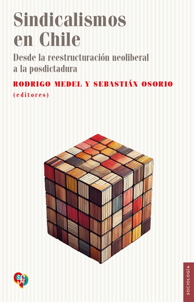

Libro · Fondo de Cultura Económica
Sindicalismos en Chile
Desde la reestructuración neoliberal a la posdictadura

Editores: Rodrigo M. Medel y Sebastián Osorio
El libro examina cómo la reestructuración neoliberal transformó el trabajo y el sindicalismo en Chile. Analiza el impacto del Plan Laboral y las estrategias de resistencia y reconstrucción sindical en distintos sectores productivos.
Sus nueve capítulos reúnen investigaciones sobre fábricas, campos, minas, puertos y otras ramas de actividad económica. El volumen reconstruye cómo los trabajadores adaptaron sus culturas e identidades sindicales a los desafíos de la democracia posdictatorial.
Una contribución para investigadores, estudiantes, sindicalistas y quienes buscan comprender la historia reciente de las relaciones laborales en Chile.